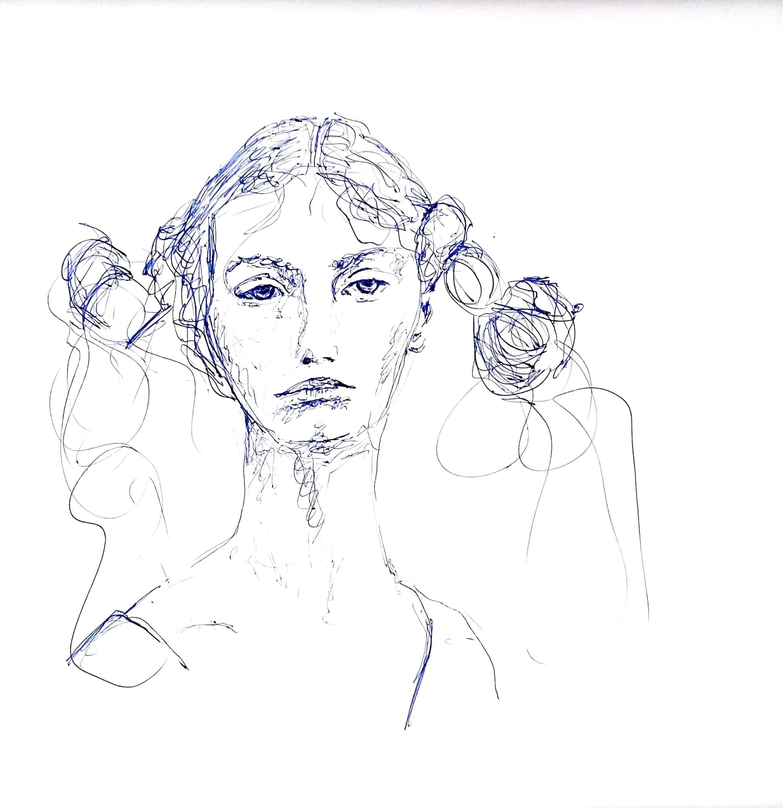

Ein Idiot legte sich in der Sommerhitze im Freibad nieder und ertappte sich bei folgenden Gedanken:
Ich will reich sein. Wenn ich reich wäre, hätte ich ein großes Haus, in dem ich mit vielen schönen Frauen Sex haben könnte. Zusätzlich hätte ich Zeit, mich ausgiebig tiefer Lektüre zu widmen. Zum Beispiel könnte ich die Phänomenologie des Geistes von Friedrich Wilhelm Hegel tief studieren. Ich könnte mich ausgiebig der Kunst widmen, ohne meine Liebsten zu vernachlässigen. Ich würde regelmäßig Sport treiben und gesund essen. Ich würde von den Menschen bewundert werden. Ich hätte eine eigene Familie. Hier, so vermute ich, würde sich ein Konflikt auftun, denn meine Frau wäre eifersüchtig auf die vielen anderen Frauen, mit denen ich Sex hätte. Eine offene Beziehung wäre für mich ausgeschlossen, dazu wäre ich viel zu eifersüchtig. Dieser Konflikt würde mir einen Strich durch die Rechnung machen. Ich müsste mich entscheiden zwischen Sex mit vielen Frauen und einer glücklichen Ehefrau mit glücklichen Kindern. Ich könnte sie betrügen, aber dann würde ich an einem schlechten Gewissen leiden. Ich würde mich dann betrogen fühlen. Ich wäre nicht mehr in der Wahrheit und darunter würde meine Kunst leiden. Würde sie das? Selbst wenn sie das nicht täte, hätte ich ständig Angst, meine glückliche Familie zu zerstören. Ich hätte Angst davor, dass meine Ehefrau meine Ausschweifungen entdecken würde. Im Islam ist dieses Problem zum Teil gelöst, denn dort ist es normal, dass ein Mann mehrere Frauen hat, aber die Frau dem Mann glücklich treu ist. Ob sie wirklich glücklich ist? Diese Gedanken sind sexistisch und rassistisch (Hier war sich der Idiot unsicher ob er diese Gedanken wirklich dachte, oder ob er dachte, dass er diese Gedanken denken müsse). Die Gedanken sind sowieso irrelevant für mich. Ich könnte mich mit der Pornografie abgeben, mich auf diese einlassen. Diese gibt mir den ersehnten unpersönlichen Sex, aber dadurch würde ich mich betrügen. Ich wäre ein Perversling, der sich insgeheim Schweinereien reinzieht. Ich müsste dann wenigstens dazu stehen und meinem Umfeld von den Schweinereien berichten. Noch schlimmer wäre es, wenn ich mich mit Sexpuppen befriedigen würde. Das ist nicht etwa wie Pornografie, gesellschaftlich akzeptiert, sondern wirklich merkwürdig. Ich würde mich schämen, davon zu berichten. Dann würde ich mich einsam fühlen. Es scheint hier keine vernünftige und befriedigende Lösung zu geben. Die Gedanken scheinen sowieso überflüssig, da ich weder reich noch mutig bin. Wenn ich mutig wäre, würde ich vielleicht reich werden und vielleicht würde der vorgestellte Konflikt gar nie entstehen. Ich würde es dann in Kauf nehmen, einsam zu sein. Ich würde es in Kauf nehmen, in Konflikte mit meiner Frau zu treten. Gut möglich, dass, wenn ich mutig und reich wäre, mir meine Frau sowieso alles verzeihen würde, denn sie fände mich extrem attraktiv.
Dieser Idiot begann sich nach diesen Gedanken mutig für zahlreiche Kunstwettbewerbe zu bewerben, scheiterte aber kläglich. Die Kunst-Jury dachte, dass seine Werke substanzlos seien, da es diesem Künstler lediglich um Erfolg gehe. Er liess es bald sein mit dem mutig sein und mit dem reich sein. Er führte ein armseliges Leben. Niemand weiss so recht, was dieser Idiot heutzutage treibt.
Ich frage mich, ob ich, wenn ich reich wäre, einfacher aus dem Idios Kosmos ausbrechen könnte oder nur noch tiefer in ihn hinein versinken würde? Ich hätte dann sehr viel Zeit meiner Kunst nachzugehen und könnte grossartige Werke schaffen, die die Welt sehen würde. Ich müsste mich aber darum bemühen, meine Kunst zu vermarkten. Das wäre mir zu anstrengend. Es wäre viel einfacher, wenn ich berühmt wäre. Wenn ich berühmt wäre, wäre es sowieso vorbei mit dem Idios Kosmos. Oder nicht? Ich will es herausfinden. Ich entscheide mich reich und berühmt zu werden. Ich will es mit einem Youtube-Kanal versuchen. Zusätzlich möchte ich mich bei Kunstwettbewerben bewerben.
[Erst wenn ich 10 Videos aufgenommen habe, möchte ich sie hier zeigen. Bis dahin traut man mir nicht, dass ich es wirklich ernst meine. Ich traue mir bis dahin ebenfalls nicht. Wie peinlich wäre es ein Video zu veröffentlichen, in dem man ankündigt, dass man reich und berühmt werden will, aber bereits beim 3. Video hört man auf Videos zu veröffentlichen. Man zieht sich zurück und die Welt weiss, dass man gescheitert ist.]
Hier notiere die Kunstwettbewerbe bei denen ich mich bewerben werde. Ich schreibe jeweils in Klammern daneben, was der Status ist (“unbeworben”, “beworben”, “abgelehnt” oder “angenommen”).
https://www.bellatriste.de/ (beworben)
